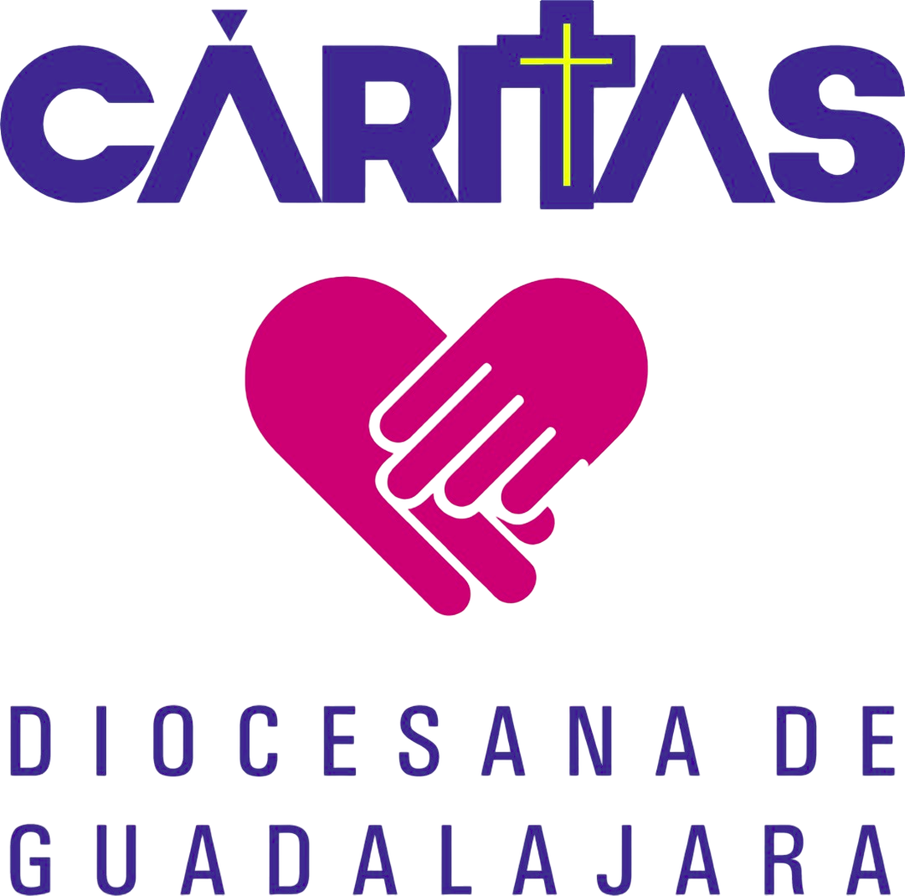

Tu aventura ha llegado a su fin

¿Te ha gustado este nuevo formato digital :)? Esperamos que sí, esta es nuestra primer edición en internet. Comparte esta página con tu familia para que el evangelio llegue a todos los rincones de tu ciudad
Si quieres más contenido como este, más accesible y más actualizado, puedes donarnos y seguir contribuyendo a la misión de Cáritas.
Nuestras redes sociales:
Dirección: Av. Belisario Domínguez 511, Col. San Juan de Dios, 44360 Guadalajara, Jalisco
Tel. 33-36-17-65-55
DONATIVOS
Cuentas:
- Santander: 65-50199690-7
- BBVA: 0480234370
CLABEs:
- Santander: 014320655019969075
- BBVA: 012320004802343707
Si necesitas recibo deducible de impuestos solicitalo en el mismo mes de tu donativo al correo: facturaelectronica@caritasgdl.org.mx